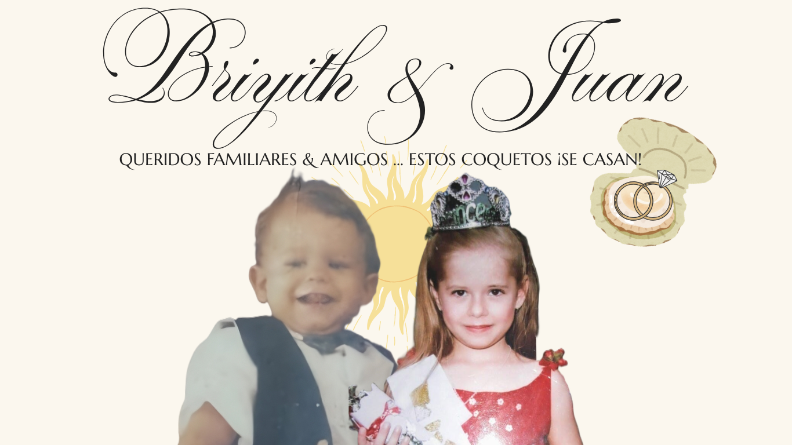

Nuestros Momentos


Días
Hs
Min
Seg
Juan siempre dice que fue amor a primera vista. Nos conocimos gracias a amigos en común y pronto empezamos a compartir momentos haciendo deporte. Entre conversaciones cada vez más largas y risas por todo lo que descubríamos que teníamos en común, nació algo especial.
Con el tiempo, comenzamos a salir... decidimos caminar juntos por el resto de nuestras vidas.
En una cena romántica, preparada con todo su cariño en el día de mi cumpleaños, me sorprendió con un corte de carne exquisito. Entre velas y sonrisas, me pidió que fuera su novia… y, sin dudarlo, dije que sí.
Otro 22 de octubre, otra vez en mi cumpleaños, llegó uno de los días más inolvidables de mi vida. Con cada detalle pensado con ternura, nos comprometimos. No había más que lágrimas de felicidad, porque en ese instante supe que había encontrado al hombre más extraordinario.
4:00 PM | Conjunto de cabañas "El Ancla del Galeón"
Santiago de Tolú
Tu presencia es nuestro mejor regalo, pero si quieres enviarnos tu cariño:
Lluvia de Sobres
Favor confirmar su asistencia